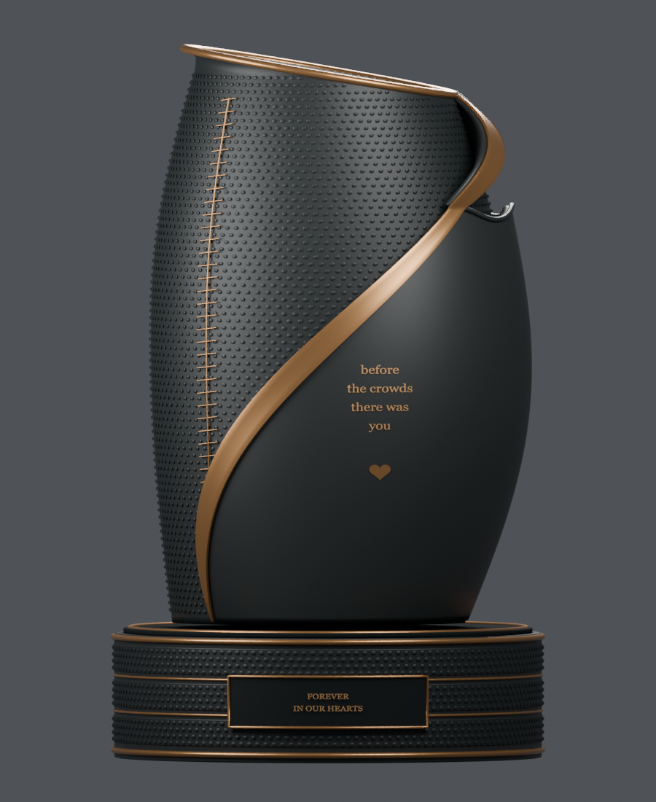
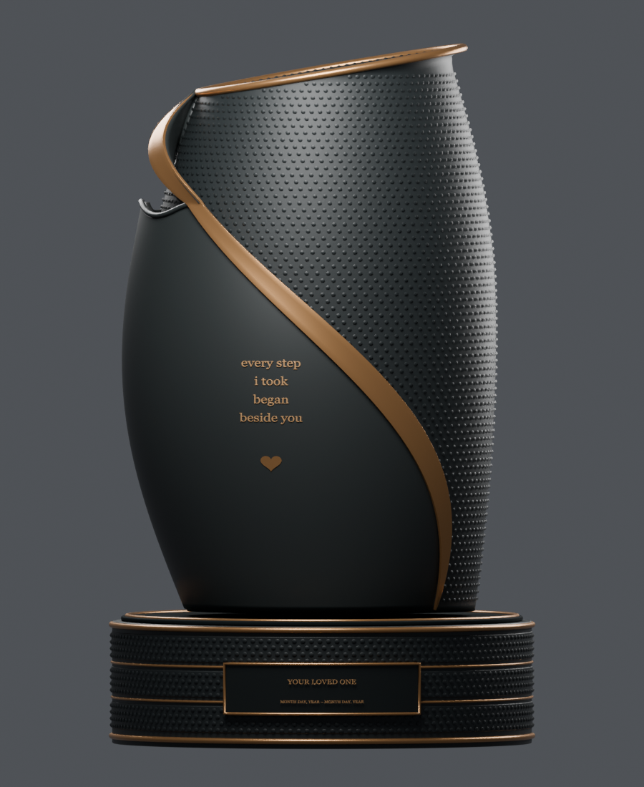

GRACEFUL TRIBUTE / AETERNA
Every Step Legacy — revision 3
Appearance review of the revised Blender model. These are actual 3D renders. The revised exterior has not been approved for manufacturing; the previous model’s capacity measurement does not apply to it.
Click any image to enlarge it. Send the view name and what to change or preserve. No 3D software is needed.
Original reference

Front comparison
Reference front
Revised front

Rear comparison
Reference rear
Revised rear

All rendered views
Review order
Compare the layered shape and shoulder first, then bronze borders, texture, lettering and plaques. Rear name and dates are demonstration placeholders. Hidden surfaces are a modeled interpretation of the concept sheet.